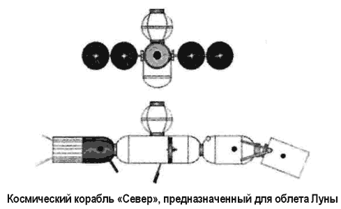
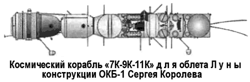
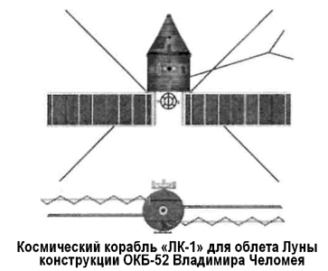
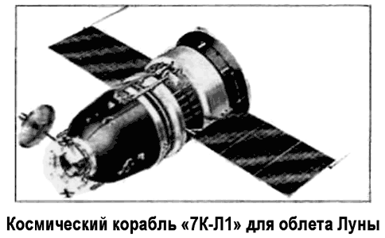
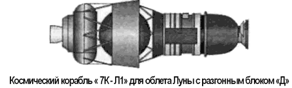

Программа облета Луны «7К-Л1»
Выиграв «первый забег» в космической гонке, Советский Союз собирался сохранить свой приоритет и в дальнейшем, да и конструкторская мысль, подстегиваемая недавними успехами, не стояла на месте. На повестке дня стоял вопрос организации пилотируемого полета к Луне, и первыми этот полет должны были совершить советские космонавты.
В марте 1959 года в ОКБ-1 под руководством Сергея Королева началась подготовка к созданию нового космического корабля, который должен был заменить «Восток» на следующих этапах развития советской космонавтики. Первоначально проект, получивший название «Север», не включал высадку космонавта на поверхность нашего естественного спутника — речь шла только о полете вокруг Луны. В отличие от будущего «Союза», в корабле «Север» предусматривался значительно больший объем спускаемого аппарата. К лету конструкторы выработали основные параметры, которые и легли в основу конструкции будущего корабля.

Работы над проектом «Север» шли ни шатко ни валко.
Нужно было менять концепцию, и в 1962 году в ответ на американскую программу «Аполлон» отдел Михаила Тихонравова ОКБ-1 предложил целый космический комплекс, состоявший из кораблей «7К», «9К» и «ПК» и предназначенный для облета Луны. Сначала на околоземную орбиту должен был выводиться корабль «9К» (разгонный блок), затем к нему последовательно пристыковывались три (максимум — четыре) корабля «ПК» (танкер) с горючим и окислителем.
После завершения заправки должен был стартовать корабль «7К» с экипажем, который после стыковки с заправленным разгонным блоком образовывал корабль для облета Луны. Если все пять запусков проходили успешно, то пилотируемый корабль (весом 23 тонны) с помощью ЖРД разгонного блока «9 К» переводился бы на траекторию облета Луны.
Весь рейс не должен был занять больше 7–8 суток.
Для того времени такая схема выглядела очень сложной, ведь на орбиту не летал еще ни один корабль с экипажем, не была отработана система стыковки, без которой осуществить проект было просто нельзя. Правда, имелась у нее и своя положительная сторона — для выведения кораблей на околоземную орбиту можно было использовать отработанную и достаточно надежную ракету-носитель «Р-7». И все же для облета Луны по этой программе потребовались бы длительные разработки и большой комплекс летно-конструкторских испытаний.

Как предварительный этап задумывалась программа «Союз 7К-Л1». Космический корабль, разрабатываемый в рамках этой программы, предназначался для пилотируемого полета вокруг Луны продолжительностью 6–7 суток. Поскольку не предусматривался выход на лунную орбиту, на корабле не устанавливалась мощная двигательная установка, а возвращение на Землю обеспечивалось маневром в гравитационном поле Луны. При точных расчетах и правильном выведении включение двигателя для возвращения не требовалось вообще. 7 марта 1963 года Сергей Королев представил черновой проект ракетно-космического комплекса «Союз». Комплекс, в частности, включал в себя очередную модификацию ракетыносителя «Р-7» под названием «Союз» и космический корабль «Союз-А», предназначенный для орбитальных полетов и облета Луны. Корабль был оснащен системами сближения и стыковки, а также позволял проводить дозаправки во время полета. В то же самое время главный конструктор ОКБ-52 Владимир Челомей предлагал свой проект облета Луны по петлеобразной траектории лунным кораблем «ЛК». Причем корабль должен был выводиться на околоземную орбиту и переводиться на траекторию полета к Луне трехступенчатой ракетой «УР500К» («Протон-К») и специальным разгонным блоком, разработанными в том же ОКБ.
Корабль «ЛК» должен был состоять из разгонного блока с ЖРД приборно-агрегатного отсека и возвращаемого аппарата конусовидной формы, напоминающей американский космический корабль «Джемини». Предполагалось оснастить корабль солнечными батареями, раскрывающимися после выхода на орбиту Земли. Первоначально пилотировать корабль должен был один космонавт, позже удалось в той же кабине разместить второго. Спасение космонавтов на этапе выведения предусматривалось вместе с возвращаемым аппаратом, который уводился от аварийной ракеты-носителя с помощью твердотопливной аварийной двигательной установки и совершал парашютную посадку по штатной программе.
В 1964 году, после того как американцы сообщили об успешном запуске тяжелой ракеты «Сатурн-1», руководство Советского Союза почувствовало, что приоритет в области космических технологий ускользает и впервые всерьез рассмотрело вопрос об экспедиции на Луну в ЦК КПСС и Совете Министров. В принятом постановлении № 655–268 «О работах по исследованию Луны и космического пространства» от 3 августа 1964 года главной задачей была заявлена высадка советского космонавта на поверхность Луны в 1967–1968 годах, к 50-летию Октября. Советую запомнить дату выхода этого постановления, поскольку мы еще не раз к нему вернемся.
Осуществление программы облета Луны было поручено ОКБ Челомея, а проект «7К-9К-11К» поддержки не получил.
Тогда же Владимир Челомей подписал аванпроект корабля «ЛК-1» для облета Луны одним космонавтом по петлеобразной траектории.

13 октября был смещен Никита Хрущев, и ОКБ-52 Челомея оказалось «за бортом». Руководство лунной программой полностью перешло к Сергею Королеву, и более того — он получил возможность использовать все наработки Челомея по пилотируемому полету к Луне и, в частности, ракету «УР-500К» для своих задач.
Так, на базе двух проектов, разрабатываемых в ОКБ-1 и ОКБ-52, родилась советская программа облета Луны, проходившая под обозначением «УР-500К-Л1» («УР-500К-7К-Л1»). 15 декабря 1965 года она была утверждена и стала основной лунной облетной программой СССР.
Жесткие лимиты, налагаемые ракетой «Протон-К» («УР-500К») и 4-й ступенью — разгонным блоком «Д», ограничивали стартовую массу корабля «7К-Л1» 5,5 тоннами.

Из-за этого корабль не имел бытового отсека и состоял из спускаемого аппарата и приборно-агрегатного отсека, который в свою очередь разделялся на переходный отсек, приборный отсек и агрегатный отсек. Сверху на спускаемом аппарате устанавливался опорный конус системы аварийного спасения. В центральной части конуса имелся проход для доступа космонавтов к гермолюку спускаемого аппарата, через который экипаж корабля должен был совершать посадку в корабль на стартовой позиции. Опорный конус сбрасывался на орбите Земли, перед стартом корабля к Луне.
Спускаемый аппарат имел сегментально-коническую форму с усиленным теплозащитным экраном, позволявшим совершать вход в атмосферу Земли со второй космической скоростью.
Экран сбрасывался перед посадкой на Землю, на высоте нескольких километров. В спускаемом аппарате размещался пульт управления кораблем, бортовой вычислитель «Салют-3», научные приборы, фотоаппаратура, система жизнеобеспечения, элементы систем терморегулирования и радиосвязи, парашютная система, объекты биологических исследований, оптический ориентатор, аккумуляторная батарея, состоящая из восьми блоков. По сравнению с орбитальной версией «7К-ОК» («Союз») в спускаемом аппарате корабля «7К-Л1» было увеличено число газовых двигателей системы управления спуском путем введения двух дополнительных двигателей по крену тягой по 15 килограммов. В то же время в спасательном аппарате не устанавливалась запасная парашютная система. Снаружи в верхней части спускаемого аппарата размещалась остронаправленная параболическая антенна для радиосвязи с Землей, работающая в дециметровом диапазоне волн.
Система ориентации и управления корабля была оснащена гироплатформой и новыми датчиками солнечно-звездной ориентации, работающими в комплексе с вычислителем «Салют-3».

Спускаемый аппарат соединялся с приборно-агрегатным отсеком с помощью переходного отсека, на котором располагались десять двигателей системы ориентации тягой по десять килограммов, работающие на перекиси водорода. По диаметру переходного отсека размещалась многовибраторная антенна командной радиолинии.
В герметичном приборном отсеке находились буферные аккумуляторные батареи (основная и резервная) системы электропитания, приборы и аппаратура бортовых систем корабля.
В негерметичном агрегатном отсеке размещалась корректирующая тормозная двигательная установка «КТДУ-53» конструкции Исаева с одним однокамерным ЖРД многократного включения тягой 411 килограммов с рулевыми соплами.
Резервного двигателя в «КТДУ-53» не было. В качестве горючего использовался несимметричный диметилгидразин, в качестве окислителя — смесь окислов азота в азотной кислоте.
Топливо общей массой около 400 килограммов помещалось в четырех сферических баках в агрегатном отсеке. Кроме того, в агрегатном отсеке размещались двигатели системы ориентации (четыре двигателя тягой по 10 килограммов и два комплекта по восемь двигателей тягой по 1–1,5 килограммах), работающие на однокомпонентном топливе — перекиси водорода.
На внешней поверхности АО находился радиатортеплообменник системы терморегулирования корабля.
Снаружи на приборно-агрегатном отсеке размещались две панели трехсекционных солнечных батарей размахом 9 метров и общей площадью 11 м2. На концевых створках панелей солнечных батарей находились антенны КВ-диапазона для радиосвязи с Землей. У торца приборно-агрегатного отсека размещалась антенна УКВ-связи и радиотелеметрии.
В пилотируемом варианте корабля «7К-Л1» должны были устанавливаться дополнительные системы и устройства: два кресла с амортизаторами системы «Казбек» для размещения космонавтов, индикатор курса, астроориентатор, фотоаппарат «Салют-1М» с дополнительным длиннофокусным объективом «Таир-ЗЗС», кинокамера «16ЛК-К1» Красногорского завода, автоматический фотоаппарат «АФА-БАМ», фотоаппарат «СКД», индивидуальные дозиметры. В систему жизнеобеспечения вводился блок личной гигиены космонавтов.
Бортовой вычислитель укомплектовывался долговременным запоминающим устройством «ДЗУ-4». Кроме того, должны были применяться новые буферные аккумуляторные батареи.
Космонавты на корабле «7К-Л1» должны были совершать полет в костюмах без спасательных скафандров.
Габариты космического корабля «7К-Л1»: максимальный диаметр — 2,72 метра, длина по корпусу на орбите ИСЗ — 5 метров, при полете к Луне — 4,5 метра, герметичный объем — 3,8 м3, масса — от 5,2 до 5,5 тонны.
Программа полета системы «УР-500К-Л1» к Луне выглядела следующим образом. Космический корабль «Союз 7К-Л1» (индекс «11Ф91», беспилотный — «Зонд»), снабженный ракетным блоком «Д» конструкции ОКБ-1, с экипажем из двух космонавтов выводится ракетой-носителем «Протон-К» на промежуточную орбиту Земли высотой в апогее — примерно 187 километров, в перигее — примерно 219 километров и наклонением 51,5°. Масса корабля «7К-Л1» с блоком «Д» на орбите ИСЗ достигает 20 тонн.
При выведении корабль находится под головным обтекателем, который сбрасывается после прохождения плотных слоев атмосферы. Для спасения космонавтов в случае аварии ракеты-носителя на участке выведения имеется система аварийного спасения, которая с помощью твердотопливных двигателей уводит спускаемый аппарат с космонавтами на безопасное расстояние. Примерно через час после старта сбрасывался опорный конус системы аварийного спасения.
После этого второй раз включалась двигательная установка блока «Д», и корабль переводился на траекторию облета Луны.
Затем блок «Д» отделялся. Масса корабля после этого составляла около 5,2 тонны.
В зависимости от точности выведения на траекторию облета Луны предусматривались коррекции движения корабля.
После облета Луны следовало выполнить еще две коррекции движения для более точного входа в атмосферу Земли.
После проведения последней коррекции корабль ориентировался, спускаемый аппарат отделялся от приборно-агрегатного отсека, совершал два погружения в атмосферу и приземлялся или приводнялся в заданном районе на парашюте с применением двигателей мягкой посадки.
Примечательно, что Сергей Королев, не слишком доверявший продукции ОКБ-52 Владимира Челомея, в 1965 году распорядился проработать еще один вариант пилотируемого облета Луны. В этом случае космический корабль «7К-Л1» выводился бы на орбиту в беспилотном режиме. Экипажу предстояло стартовать на орбиту на корабле «7К-ОК» с помощью ракеты «Союз». После стыковки кораблей космонавты должны были перейти в скафандрах «Ястреб» из бытового отсека «7К-ОК» в спускаемый аппарат «7К-Л1» через открытый космос и изогнутый тоннель в опорном конусе системы аварийного спасения. После этого корабль «7К-ОК» должен был автоматически отстыковаться, а корабль «7К-Л1», сбросив стыковочный узел с опорным конусом, стартовать к Луне.
Позднее на специальном самолете «Ту-104» проводились эксперименты по исследованию возможности перехода двух космонавтов в скафандрах из корабля «7К-ОК» в корабль «7К-Л1». В результате этих исследований вариант с пересадкой экипажа на орбите Земли был отвергнут.